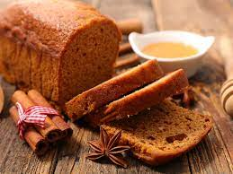

Sur ce blog vous allez découvrir toutes mes astuces et mes coups de coeur de cuisine dans le monde entier. J'adore voyager et m'enrichir de nouvelles cultures culinaires.
Découvrir mes platsLes recettes des meilleurs pain d'épices
ÉTAPE 1
miel
Faites chauffer 250 g de miel à la casserole ou au micro-ondes.
ETAPE 2
farine
levure chimique
sucre en poudre
sucre vanillé
quatre-épices
Mélangez la farine avec la levure chimique, les deux sucres et les épices.
ÉTAPE 3
miel
Ajoutez le miel chaud (en remuant idéalement avec une cuillère en bois).
ÉTAPE 4
oeuf
lait
Incorporez petit à petit 2 oeufs, puis un peu de lait juste tiède pour amalgamer le tout.
ÉTAPE 5
Préchauffez le four à 160°C (thermostat 5-6)
ETAPE 1 le four à 200 °C. Laver et frotter le potimarron puis le sécher et le couper en 2 et retirer les graines. Il n'est pas nécessaire d'enlever la peau (d'où ma préférence pour un potimarron bio).
ETAPE 2 la courge en gros cubes et les disposer dans un bol. Verser les cuillères d'huile et saupoudrer d'une bonne pincée de cannelle. Saler généreusement et poivrer. Mélanger bien avec les mains, pour imprégner les légumes du mélange.
ETAPE 3 Étaler en une couche les légumes, sur une plaque recouverte de papier sulfurisé en essayant d'éviter que les morceaux se touchent entre eux.
ETAPE 4 Vous pouvez également omettre la cannelle, et mélanger le potimarron avec de l'huile d'olive et un peu de persil ciselé, puis étaler les cubes sur la plaque avec des gousses d'ail en chemise (avec la peau), du thym et/ou du romarin.
Pour finir
ETAPE 5 Le potimarron pour 20/25 minutes à 200°C, en retournant à mi-cuisson. Si nécessaire, en fin de cuisson, régler le four en position grill pendant 5 minutes, pour faire "croustiller" les cubes de potimarron.